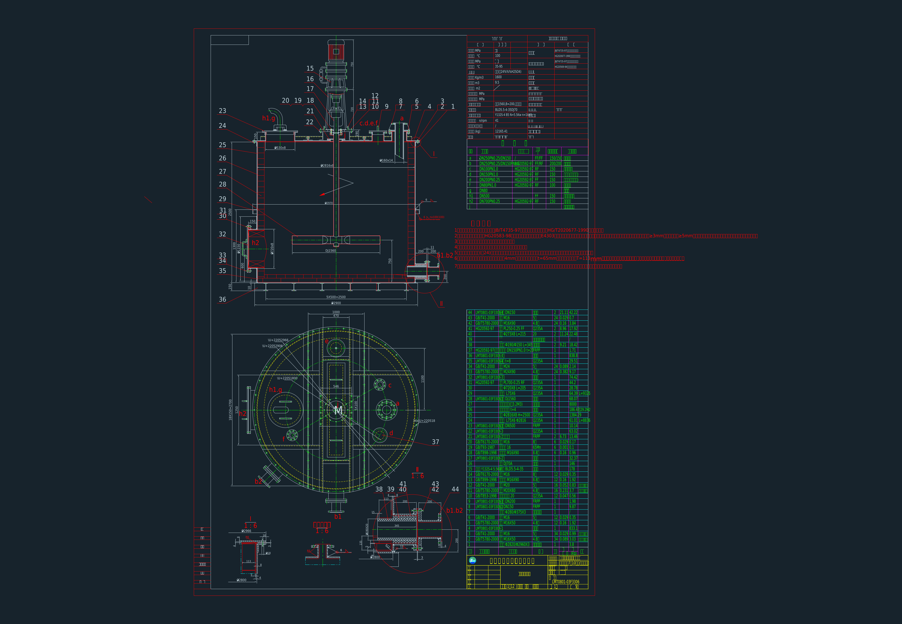

模型 · 量测与句柄 · 安装表 · 支承/空间复核 · 1.0保留版
稀碱配置槽 F41B05 · 2.0-F41B05-01
外部本体/接口、基础配合与安装复核；不展开内部工艺构造
新总图局部南向主低口转换为既有类型模型东向，整体转90°；原单台XYZ/旋转不变，依据见三槽方位记录
次低口/人孔的新旧相对方位仍有差异，保持厂家相对布局，工艺最终方位待核；不单独旋转接口消除差异
按共用文件外形用于F41B02/F41B05/F41B06，三台介质、材质和接口用途不互相复制确认
新增150高底型钢；裸罐高度2500，搅拌按90+720+750=1560外形口径，内部零件仍示意
h2外廓Ø1150按总图，DN700与护套/外廓分别记录；底双排口复合套管细部待核
g/h1共座明确；呼吸弯管曲率和法兰厚待详图，未补造出口法兰
未标盖板厚、法兰厚和管外径系列为显示值；不得据此制造
各单台设备的工艺绝对方位待核；不凭文字插点新增位置
原始图纸、1.0、先前八类、建筑/桥架及原土建几何保持
